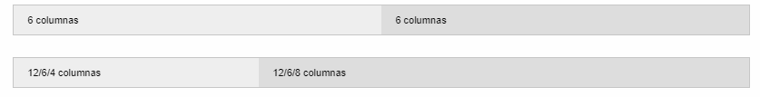
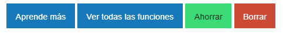
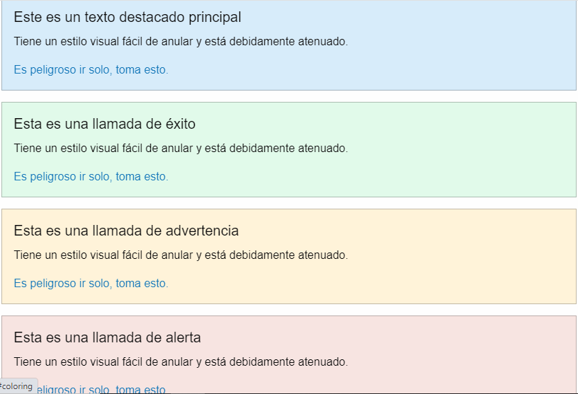

¿Qué es Fountation?
Foundation es un framework de interfaz de usuario responsive. Foundation proporciona una cuadrícula responsive e incluye componentes de interfaz de usuario HTML y CSS, plantillas, y fragmentos de código, incluyendo tipografía, formularios, botones, barras de navegación y otros componentes de interfaz usuario, así como extensiones de JavaScript opcionales. Foundation está mantenida por zurb.com y es un proyecto de código abierto.
Instalar con administradores de paquetes
npm install foundation-sites
Instalar Enlaces CDN
<link rel="stylesheet" href="https://cdn.jsdelivr.net/npm/foundation-sites@6.6.3/dist/css/foundation.min.css" integrity="sha256-ogmFxjqiTMnZhxCqVmcqTvjfe1Y/ec4WaRj/aQPvn+I=" crossorigin="anonymous">
<script src="https://cdn.jsdelivr.net/npm/foundation-sites@6.6.3/dist/js/foundation.min.js" integrity="sha256-pRF3zifJRA9jXGv++b06qwtSqX1byFQOLjqa2PTEb2o=" crossorigin="anonymous"></script>
Hecho esto ya puedes importar estos archivos dentro de la sección head de los HTML:
<!doctype html>
<html class="no-js" lang="en">
<head>
<meta charset="utf-8" />
<meta http-equiv="x-ua-compatible" content="ie=edge">
<meta name="viewport" content="width=device-width, initial-scale=1.0" />
<title>Foundation Starter Template</title>
<link rel="stylesheet" href="css/foundation.css" />
</head>
<body>
<h1>Hello, world!</h1>
<script src="js/vendor/jquery.js"></script>
<script src="js/vendor/what-input.js"></script>
<script src="js/vendor/foundation.min.js"></script>
<script>
$(document).foundation();
</script>
</body>
</html>
Elementos mas usados de foundation
Cómo crear columnas en Foundation
Para crear columnas lo primero que tienes que hacer es crear un elemento HTML padre con la etiqueta row. Esta etiqueta le dice a Foundation que el contenido van a ser columnas.
Otra cosa que tienes que tener en cuenta es que Foundation se basa en un sistema de 12 columnas, es decir, teniendo 12 columnas en total, si quieres crear dos columnas de igual tamaño, tienes que crear 2 columnas de 6. Si quieres 3 columnas tienes que crear 3 columnas de 4 porque 3 * 4 = 12 columnas en total.
Veamos un ejemplo creado dos columnas de igual tamaño:
<div class="row">
<div class="columns small-6">6 columns</div>
<div class="columns small-6">6 columns</div>
</div>
<div class="row">
<div class="columns medium-6 large-4">12/6/4 columns</div>
<div class="columns medium-6 large-8">12/6/8 columns</div>
</div>

Botones de Foundation
Para crear un botón tienes que usar la clase button. Dentro de los botones bootstrap ha creado una serie de tipos:
<a href="about.html" class="button">Learn More</a>
<a href="#features" class="button">View All Features</a>
<!-- Buttons (actions) -->
<button type="button" class="success button">Save</button>
<button type="button" class="alert button">Delete</button>

Alertas
Las alertas sirven para mostrar un mensaje al usuario. Como pasa con los botones, las alertas tienen varios tipos:
<div class="callout success" data-closable>
Contenido de la alerta
</div>
<div class="callout primary" data-closable>
Contenido de la alerta
</div>
<div class="callout warning" data-closable>
Contenido de la alerta
</div>
<div class="callout success" data-closable>
Contenido de la alerta
</div>
<div class="callout danger" data-closable>
Contenido de la alerta
</div>
